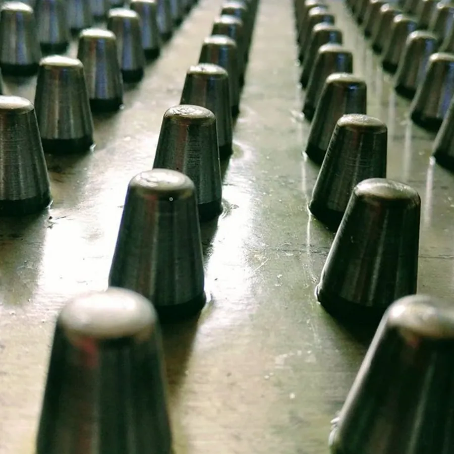
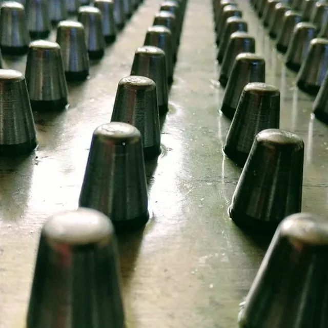
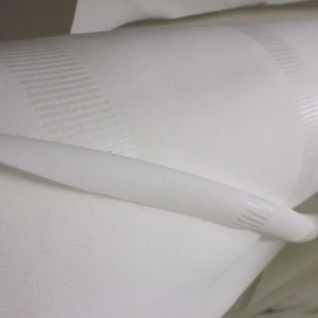
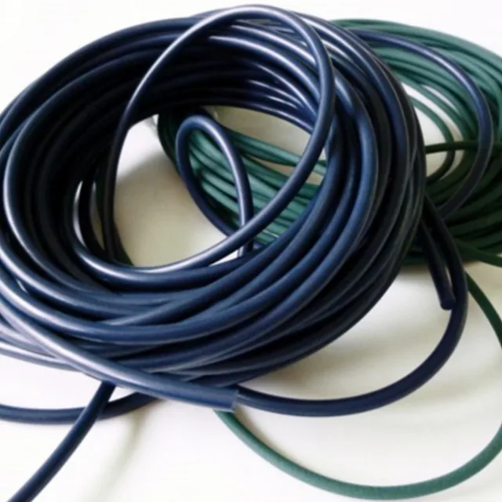
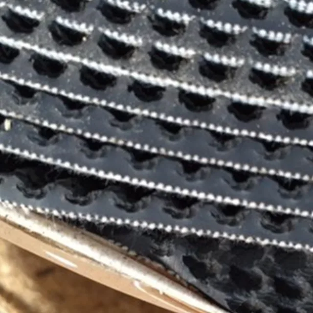
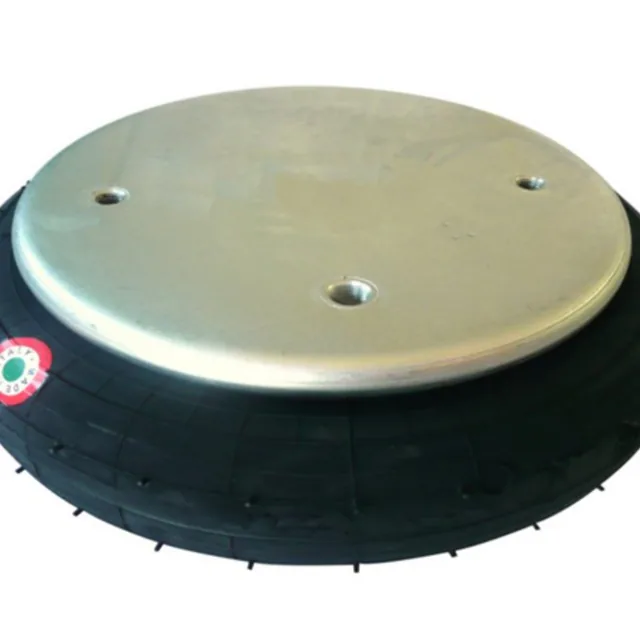

Staking Machine
Spare Parts
Spare parts and consumables for leather staking (softening) machines — pin-and-hole plate sets, staking belts and their cords, cylinder grip coverings and anti-vibration shock absorbers. Matched to your machine and the leather you process, and quality-checked before they ship.
Reduce Downtime
Keep a spare pin plate set, staking belts, cylinder grips and anti-vibration mounts on the shelf. When the pins round off or a belt glazes, swap the part and your softening line is back in production in minutes, not days.
Soft, Even Hand
Sharp pins, true belts and a positive cylinder grip work every part of the hide the same. The right plate density and a clean feed give a soft, full, uniform leather — without over-working the grain.
Matched To Your Machine
Plates, belts, cords, grips and shock absorbers identified against your exact brand and model — original and compatible. Pin density and pattern matched to your leather, with no minimum order.
Spare Parts for
Leather Staking
Kymera Group supplies spare parts and consumables for the staking (softening) machines used in tanneries to make dried leather soft, supple and full. The hide is carried by transport belts and feed cylinders between two plates studded with pins and holes; as the heads vibrate, the pins flex and massage the fibres thousands of times a minute, breaking the bonds set during drying and stretching the leather back to its full area.
From the pin-and-hole plate sets — the working tools — to the staking belts and their jointing cord, the grip coverings for the feed cylinders and the anti-vibration shock absorbers that damp the heads, we source the right component for your specific machine. Tell us your brand, model and the leather you process, and we'll match the part — including the pin density and pattern — and quote it for you.

The Complete
Staking Machine Catalogue
From pin-and-hole plate sets to staking belts, jointing cords, cylinder grips and anti-vibration shock absorbers — everything your softening line needs, matched to your brand and model and quality-checked before dispatch.

Set of Plates (Pins & Holes)
The working tools of the machine. The hide is flexed between a pinned plate and a holed plate so the pins draw the fibres apart and soften it. Supplied in the pin density and pattern matched to your machine and leather.
Request a Quote
Staking Belts
Transport and working belts that carry the leather through the staking heads at constant tension. A worn or stretched belt slips and leaves the softening uneven — replaced as a set, matched to your machine width.
Request a Quote
Cord for Staking Belts
Jointing and tensioning cord for the staking belts — keeps the belt run closed and at the correct tension so the hide is fed and worked evenly through the machine, pass after pass.
Request a Quote
Grip for Cylinders
Grip covering for the feed and transport cylinders. It grips the leather and pulls it steadily through the heads; when it polishes smooth the hide slips, so the covering is renewed for a positive, even feed.
Request a Quote
Anti-Vibration Shock Absorbers
Anti-vibration mounts that damp the oscillation of the staking heads and isolate it from the frame — protect the structure and bearings, cut noise and keep the softening action smooth and consistent.
Request a QuotePin Plates & Staking Action
The pins are the heart of the machine: their density, pattern and the gap they work in decide how hard the hide is flexed, how soft it becomes and which leathers you can run. These are the working principles and plate configurations behind a good, even staking.
Pins Into Holes
The leather passes between a pinned plate and a holed plate. As the heads vibrate, the pins push the hide into the opposing holes, flexing and stretching the fibres in every direction thousands of times a minute — breaking the bonds set during drying.
Dry Staking
Carried out after the leather is dried, dry staking softens the hide to its final hand and full, supple feel. Pin density, gap and pressure are set to the article — enough action to soften without over-working or loosening the grain.
Wet / Samm-Staking
Run earlier, while the leather still holds moisture, to stretch the hide, open the fibres and recover area before final drying. The same machine and plates handle it — the pin pattern and pressure are adjusted to the higher moisture.
Bovine Pin Plates
Heavier, more widely spaced pins for thick, firm bovine hides — upholstery, automotive and shoe leathers. The coarser pattern delivers the stronger mechanical action a substantial hide needs to soften through the full thickness.
Sheep & Goat Plates
Finer, denser pins for soft, thin sheep, goat and garment leathers. The close pattern softens gently and evenly without marking or over-stretching delicate skins — for the softest possible hand.
Pressure & Penetration
The gap between the plates and the working pressure set how deeply the pins penetrate and how aggressively the hide is worked. Fine adjustment matches the action to moisture, thickness and article — soft and full, never broken-grained.
How soft and full the leather comes out is set mainly by the pins — their density, pattern and how deep they work — fine-tuned by belt speed, plate gap and pressure. Pins round off with use and a worn plate stops opening the fibres, so plate sets are re-pinned or replaced to restore the action. We match the plate density and pattern to your leather, and supply the staking belts, jointing cord, cylinder grips and anti-vibration mounts that keep the feed and the heads running smoothly.
Staking, Step by Step
The staking machine flexes and stretches the dried hide between pinned plates to make it soft, full and supple — working every part of the skin the same. Here is the cycle on the production floor.
Feed & Convey
The hide is fed in and the transport belts and gripped cylinders carry it into the heads at constant tension and speed.
Flex The Fibres
The vibrating heads drive the pins of one plate into the holes of the other through the leather, flexing the fibres thousands of times a minute.
Soften & Stretch
The repeated flexing breaks the bonds set in drying and stretches the hide — softening it through the thickness and recovering area.
Through & Stack
The softened hide passes out and is stacked — soft, full and even — ready for toggling, drying or the next operation.
Your Questions,
Answered
What does a staking machine do to leather?
A staking machine softens and stretches the leather after drying. The hide is worked over pins that repeatedly flex and stretch the fibres in every direction, breaking the bond between the dried collagen fibres so the leather becomes soft, supple and full. Staking also stretches the hide to recover area and relaxes internal tension — one of the most important mechanical operations for the final hand and softness.
How does a vibration (pin) staking machine work?
The leather is carried by transport belts and feed cylinders between two plates studded with pins and holes. One plate vibrates rapidly while its pins enter the holes of the other through the leather, flexing and massaging the fibres thousands of times a minute. Pin density, gap and pressure set how aggressively the hide is softened; belts, cylinder grips and anti-vibration mounts keep the action even across the whole skin.
What is the difference between wet and dry staking?
Dry staking is done after the leather is dried and softens the hide to its final hand. Wet (or samm-) staking is done earlier, while the leather still holds moisture, to stretch the hide, open the fibres and start the softening before final drying. The same machine and plates run both — the pin pattern, gap and pressure are adjusted to the moisture and the leather type.
How often do pin plates and staking belts need replacing?
Pins wear and round off, and worn pins stop opening the fibres so the softening falls off — a worn plate set is re-pinned or replaced. Staking belts stretch and glaze and cylinder grips polish smooth, which makes the feed slip and the softening uneven; these are wear parts renewed on a regular schedule. Anti-vibration shock absorbers harden and crack over time and are replaced to protect the frame and bearings.
Can you supply pin plates in the right density for my leather?
Yes. Pin plates are made in different pin densities and patterns: coarser, more widely spaced pins for heavy bovine hides and finer, denser pins for soft sheep, goat and garment leathers. Tell us your machine and the leather you process and we will match the plate set, the gap and the pin pattern so the softening is right for your article.
Which staking machine brands do your parts fit, and is there a minimum order?
Our staking machine spare parts and consumables are compatible with the most widespread brands of vibration and through-feed staking machines, including Cartigliano, Baggio, Mostardini, Gozzini and Rizzi. There is no minimum order quantity — a single set of staking belts, one pin plate set or a complete consumables package, supplied with the same care.
Send Your Request
Tell us your staking machine brand and model, the part you need — or the leather you process and the softness you want from the pin plates — and the quantity. We'll come back to you with the right component, the right price, and a clear lead time.